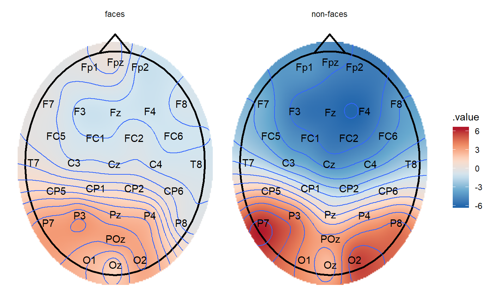

plot_topo initializes a ggplot object which takes an eeg_lst object
as its input data. Layers can then be added in the same way as for a
ggplot2::ggplot object.
plot_topo(data, ...) # S3 method for tbl_df plot_topo(data, value = .value, label = .key, ...) # S3 method for eeg_lst plot_topo(data, projection = "polar", ...)
| data | A table of interpolated electrodes as produced by |
|---|---|
| ... | If data are an |
| value | Values used for the interpolation, generally |
| label | Label of the points that are used for the interpolation, generally |
| projection | Projection type for converting the 3D coordinates of the electrodes into 2d coordinates. Projection types available: "polar" (default), "orthographic", or "stereographic" |
A ggplot object
Before calling plot_topo, the eeg_lst object object must be appropriately
grouped (e.g. by condition) and/or
summarized into mean values such that each .x .y coordinate has only one
amplitude value. By default, plot_topo interpolates amplitude values via
eeg_interpolate_tbl, which generates a tibble with .key (channel),
.value (amplitude), and .x .y coordinate variables. .x .y coordinates are
extracted from the eeg_lst object, which in turn reads the coordinates logged
by your EEG recording software. By default, plot_topo will display electrodes
in polar arrangement, but can be changed with the projection
argument. Alternatively, if eeg_interpolate_tbl is called after grouping/summarizing
but before plot_topo, the resulting electrode layout will be stereographic.
plot_topo called alone
without any further layers will create an unannotated topographical plot.
To add a head and nose, add the layer annotate_head. Add
contour lines with ggplot2::geom_contour and electrode labels
with ggplot2::geom_text. These arguments are deliberately not
built into the function so as to allow flexibility in choosing color, font
size, and even head size, etc.
To add additional components to the plot such as titles and annotations, simply
use the + symbol and add layers exactly as you would for ggplot2::ggplot.
Other plotting functions:
annotate_events(),
annotate_head(),
eeg_downsample(),
ggplot.eeg_lst(),
plot.eeg_lst(),
plot_components(),
plot_in_layout(),
theme_eeguana()
Other topographic plots and layouts:
layout_32_1020,
plot_components(),
plot_in_layout()
library(dplyr) library(ggplot2) # Calculate mean amplitude between 100-200 ms and plot the topography data_faces_ERPs %>% # select the time window of interest filter(between(as_time(.sample, unit = "milliseconds"), 100, 200)) %>% # compute mean amplitude per condition group_by(condition) %>% summarize_at(channel_names(.), mean, na.rm = TRUE) %>% plot_topo() + # add a head and nose shape annotate_head() + # add contour lines geom_contour() + # add electrode labels geom_text(color = "black") + facet_grid(~condition)# The same but with interpolation data_faces_ERPs %>% filter(between(as_time(.sample, unit = "milliseconds"), 100, 200)) %>% group_by(condition) %>% summarize_at(channel_names(.), mean, na.rm = TRUE) %>% eeg_interpolate_tbl() %>% plot_topo() + annotate_head() + geom_contour() + geom_text(color = "black") + facet_grid(~condition)